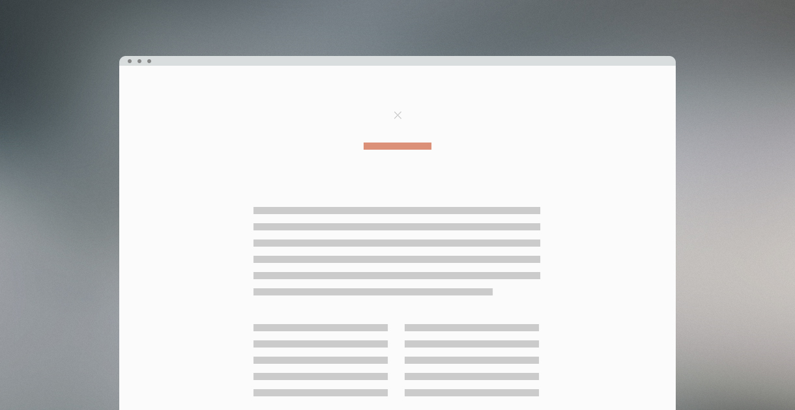

A Super Simple Start
4 min readI’m constantly learning, so this is a project I will continuously update. It’s primarily a tool to make my life easier, but you’re free to use it and modify as you wish. You can find the latest version on GitHub.
Update 30.05.15 — While it still shares similar features, this has now been updated to account for Jekyll. This article will be updated in due time.
Writing code is tedious, and I found myself writing the same thing over and over again unless I used extensive frameworks like Foundation and Bootstrap. No hate, but they’re way too big for the majority of the projects I’m currently working on.
So, frustrated with that fact, I set up a starting point to kickstart future projects. No styling, nothing fancy, no huge library apart from jQuery, just the things I found myself writing over and over again. It’s currently featuring a grid system, animations, retina support for images and some basic resets. And all in Sass so it’s easy to maintain!

Canvas
This is as bare bones as I want it to be. Perhaps it’s even at the point where you feel like it’s not enough, but that’s the point. I just want to load up a basic site structure without writing everything from scratch. If I find myself writing something at the start of every project, I’ll just include it in this “boilerplate”. Apart from some really basic styles, and a dotted grid pattern as a background property on the body tag, you’re ready to play around. It’s like my digital dotted notebook.
Configuration
The HTML document is merely a basic setup, which includes jQuery, Google Fonts (I usually change this to Typekit after finding the perfect font), basic meta tags, and FastClick to battle pesky smartphone behaviour. The fun stuff is in the Sass:
$primary: 'Source Sans Pro', sans-serif
$secondary: 'Freight Text Pro', Georgia, serif
I prefer Sass for my personal projects, and I usually start with typography — defining fonts, font-size, line-height, line-length and so on. The predefined fonts are just there to look pretty if I for some reason start with something other than typography.
$main-color: #555
$highlight-color: #4caac6
I try to use general names and not name variables “blue” and “green”. There’s always the off chance that I might change the colours of the website, and when $red = a shade of blue, I’m not going to stay sane for very long.
@mixin animate($time)
webkit-transition: $time
-moz-transition: $time
-o-transition: $time
transition: $time
Usually implemented on elements with a hover effect to fade in and out. This is defined by typing:
@include animate(0.2s ease-in-out)
Lastly, I import the grid system and retina display support (when needed) before the main styling of the body. This is just so the grid won’t overwrite anything I define in the main style. Animations are included at the very end of my document. Sass is clever, so I don’t need the .scss file extension.
@import 'grid'
@import 'retina'
@import 'animations'
@keyframes fadeIn
0% opacity: 0
100% opacity: 1
The grid
.grid
width: 100%
.grid:after
content: ""
display: table
clear: both
[class*='col-']
float: left
padding: $padding-variable
From there you define the width of the columns you need — like .col-50 for 50% or .col-33 for 33.33%. I have the basic layouts defined already, like 100%, 50%, 25%, 20% 33% and 66%. Grids don’t have to be complex, and this one is based on Chris Coyier’s Don’t Overthink It grid, which is already fairly basic.
.col-50
width: 50%
.col-33
width: 33%
.col-25
width: 25%
And that’s pretty much it. You could certainly tweak the grid system to be even cleaner by using Sass arguments and whatnot, but I kind of like the lightness of code that’s not loading 18 unused grid-classes. However, if you wanted to:
$max: 100;
$step: 5;
@for $i from 1 through ($max / $step)
$x: ($i * $step)
.col-#{$x}
width: ($x * 1%)
This website was built on top of this “framework”. If you have any questions, feel free to ask or do the GitHub thing.